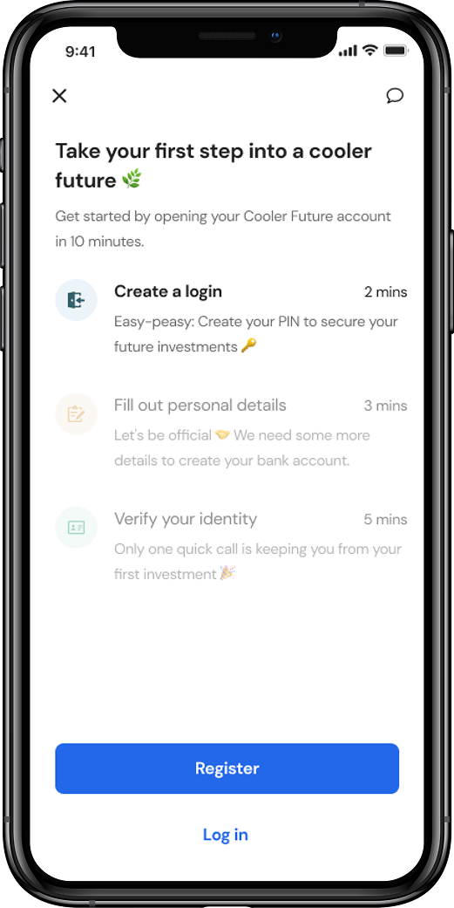
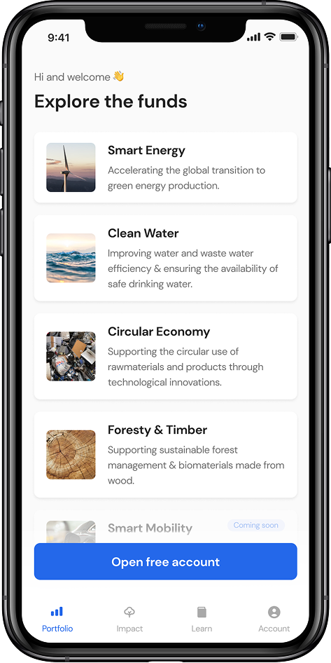
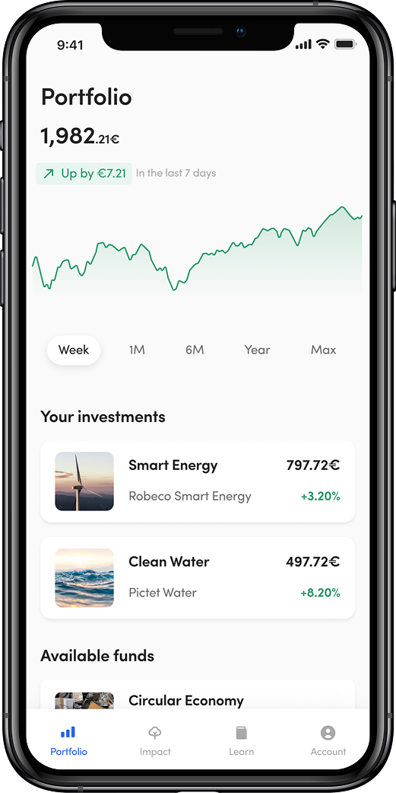
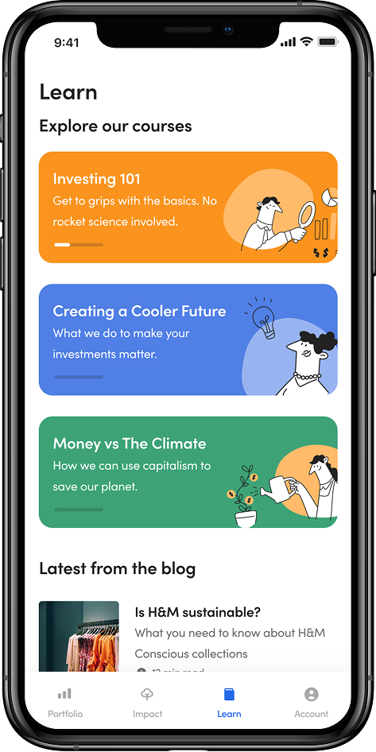
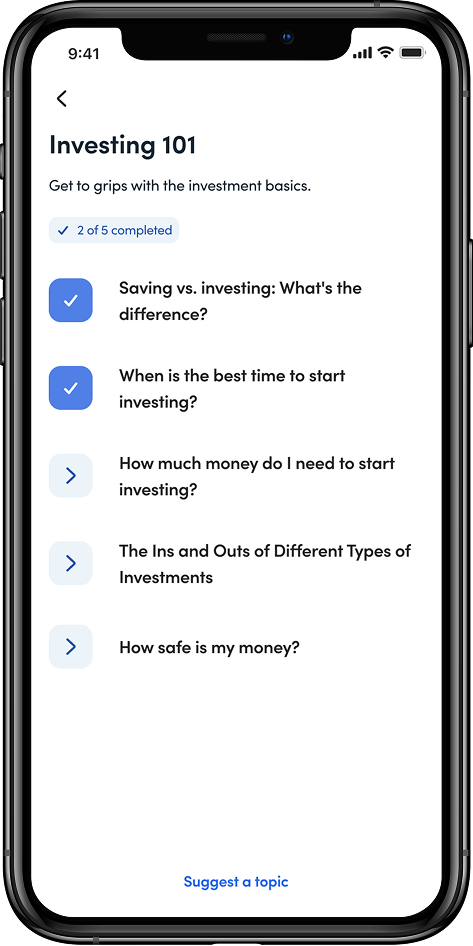

€20
Minimum investment —
radical accessibility by design
2
Distinct user types with
fundamentally different needs
3
Surfaces designed: app,
website, design system
Full
End-to-end ownership from
research to shipped product
Onboarding — removing friction without removing rigour
Opening a regulated investment
account is legally complex.
It doesn't have to feel it.
New users had to open a German depot account as part of signup — KYC, identity verification, tax information, regulatory disclosures. This wasn't optional and it couldn't be hidden. The job was to make it feel like the minimum necessary friction, and nothing more.
The approach was methodical: anything that could be deferred was deferred. Anything legally skippable was removed. Every anxiety-inducing step was front-loaded with context — users knew what they'd need before they needed it. Progress was always visible. Nothing appeared without explanation.
Once registered, users moved straight into fund selection — choosing the themes that matched their values before committing any money. Smart Energy, Clean Water, Circular Economy, Forestry & Timber. The investment followed the conviction.
Onboarding completion is the single most important metric for a product like this. Every moment of unexpected friction is a drop-off point. Getting this right wasn't a nice-to-have — it was the difference between a business that worked and one that didn't.

Register in 10 mins

Choose your themes

Your portfolio
Education — trust built through knowledge
Transparency was
the conversion strategy.
For both user types, trust was the barrier — and trust can't be declared, only demonstrated. The Learn section was built to be a genuine resource: investing fundamentals for beginners, and detailed fund methodology for the skeptical experienced investor.
Courses were designed to feel earned rather than pushed. Users moved at their own pace, tracked their progress, and could suggest topics the product didn't yet cover. Education wasn't marketing in disguise — it was the product doing exactly what it promised: making sustainable investing legible to anyone.

Learn — courses and sustainability content

Investing 101 — progress tracked lesson by lesson
Marketing website
Two surfaces.
One world.
Alongside the mobile app, I was designing the marketing website — often the first place a potential user encountered Cooler Future. The visual language, tone, and hierarchy of trust signals had to feel completely cohesive with the app. For a product where credibility was everything, a disconnect between the two would have been costly. The design system I built was the thread connecting both.